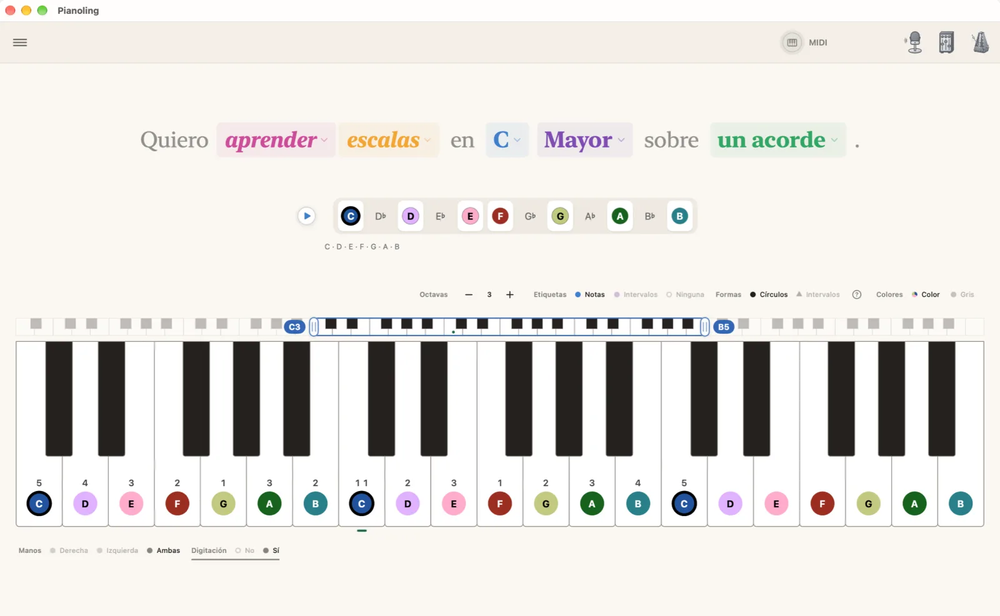
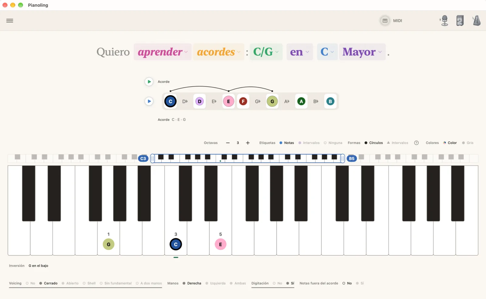
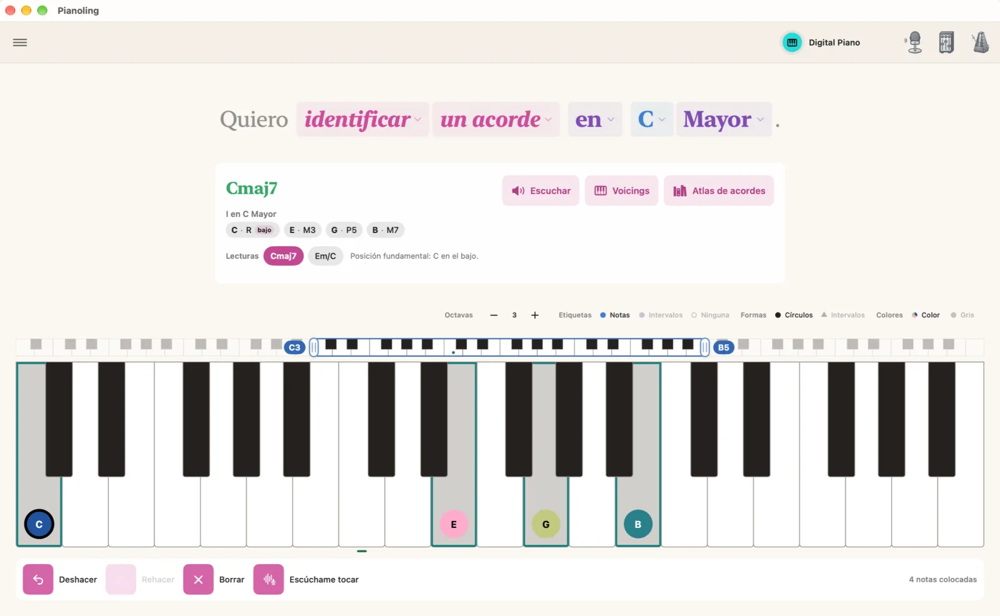
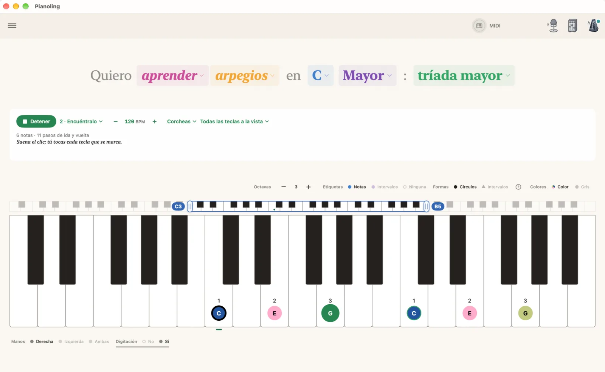
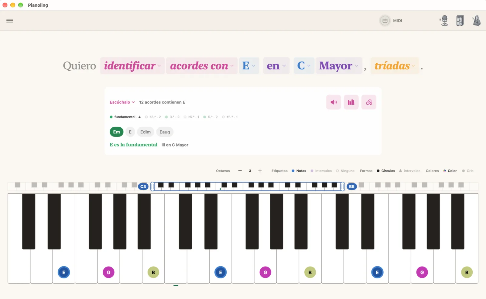

Di lo que quieres aprender. Las teclas lo muestran.
La app hermana de Fretling, para el piano, en Mac, iPad y iPhone. Di lo que quieres aprender en lenguaje sencillo y míralo en las teclas, con la digitación de cada mano. Toca un acorde en un teclado MIDI y Pianoling lo nombra.
Llega pronto al App Store: Mac, iPad y iPhone Consigue Pianoling en el App Store Lee la guía

Con digitación, para las dos manos
Cada escala y cada arpegio llevan sus números de dedo. Elige la mano derecha, la izquierda o ambas, y cada tecla muestra el dedo que la toca.
Mayor, Menor, las dos Pentatónicas, Blues, Menor armónica y Menor melódica son gratis. Los modos, de Dórico en adelante, son Pro. Pro
Cada acorde, cada inversión
Los acordes de tu tonalidad, en posición fundamental o en cualquier inversión, cerrados o abiertos, sobre el bajo que elijas. El Atlas de acordes trae cada cualidad sin salir de la tonalidad.
Los voicings de jazz, shell, sin fundamental y a dos manos, son Pro. Pro

Tócalo, nómbralo
Toca un acorde en un teclado MIDI, o tócalo en las teclas de la pantalla, y Pianoling lo nombra, te da su número romano en tu tonalidad y lista las otras lecturas. Las dos formas son gratis.
O tócalo en un piano acústico y deja que Pianoling escuche por el micrófono. Funciona mejor con acordes sencillos y con notas sueltas en el centro del teclado. Pro

Arpegios, paso a paso
Cinco pasos por cada arpegio. Escúchalo y Encuéntralo son gratis. Tócalo, A tiempo y A ciegas califican lo que tocas, por MIDI o por el micrófono, en una tonalidad o por el ciclo. Pro

Los acordes que tienen una nota
«Quiero identificar acordes con E en C Mayor». Cada acorde de tu tonalidad que tiene esa nota, de las tríadas a los acordes de 13ª, con el papel de la nota en cada uno.
Practícalos con Escúchalo, Encuéntralo y Nómbralo, gratis. Tócalo te califica. Pro

Sonido y práctica
- El piano de cola: un piano de cola acústico que suena con la resonancia de sus propias cuerdas.
- El mezclador: equilibra las notas, los acordes y el metrónomo.
- El metrónomo, completo: tempo, compás, subdivisiones, tap y sus sonidos.
- La batería: el secuenciador por pasos y su biblioteca de patrones. Pro
- Deshacer y Rehacer para tus ediciones, con ⌘Z y ⇧⌘Z en un teclado.
Gratis para siempre. Pro es la parte profunda.
Qué es gratis
- Escalas, Acordes, Tríadas y Arpegios en cada tonalidad
- Mayor, Menor, Pentatónicas, Blues, Menor armónica y Menor melódica
- La digitación de cada mano, las inversiones y los voicings cerrados y abiertos
- Nombrar un acorde tocado en pantalla o en un teclado MIDI
- Los acordes que tienen una nota, y el Atlas de acordes
- Escúchalo y Encuéntralo en cada arpegio
- El piano de cola, el mezclador y el metrónomo
Qué añade Pro
- Los modos, de Dórico a Locrio
- Voicings shell, sin fundamental y a dos manos
- Práctica calificada: Tócalo, A tiempo y A ciegas en cada arpegio, y Tócalo en los acordes que tienen una nota
- Detección en vivo: nombrar lo que tocas en un piano acústico
- La batería y su secuenciador
Una compra, una vez: sin suscripción. Prueba Pro gratis 14 días. El desbloqueo cubre cada Mac, iPad y iPhone con tu cuenta de Apple, y admite En familia. Nada que hoy sea gratis pasa después detrás del desbloqueo. La comparación completa
Privado por diseño
Pianoling funciona por completo en tu dispositivo. No hay cuenta, ni analítica, ni rastreo. Lo que tocas en un teclado MIDI se queda en tu dispositivo, y Bluetooth solo se usa para conectar el teclado que vincules.
El micrófono solo lo usa Detección en vivo, por la que también escucha la práctica calificada cuando no hay un teclado MIDI conectado. El audio se analiza según llega y nunca se graba, se guarda ni se envía. La política de privacidad